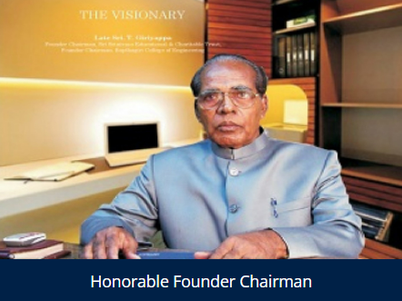

To be a best institution imparting quality engineering education to deal with community needs through learning and performance.
-To implement path breaking student centric education methods. -To augment talent, nurture teamwork to transform to develop individual as responsible citizen. -To educate the students and faculties about entrepreneurship to meet vibrant requirements of the society. -Strengthen Industry-Institute Interaction for knowledge sharing.
It is well known that India is home to a significant proportion of youth of the world today. The world is focusing on India as a source of technical manpower. They are looking at our students as a pool of talents. If our students make up their mind and work in close unity with the working class of people, they can do wonders. In the recent years the world has come to look India with renewed respect and recognizing them as strong global power in the world. Also, it has a future when the fabled richness of India’s art, culture, intellectual explorations, and spiritual pursuits will begin to show their full radiance in bringing success to India. Youth is the period when man is full of energy, ambition and zest for life. The power possessed by youth is a recognized force today. The power of the energy can be used for both constructive and destructive purposes. The youth of today do not have strong characteristics of past generations.
080-28372800 or 080-28372797